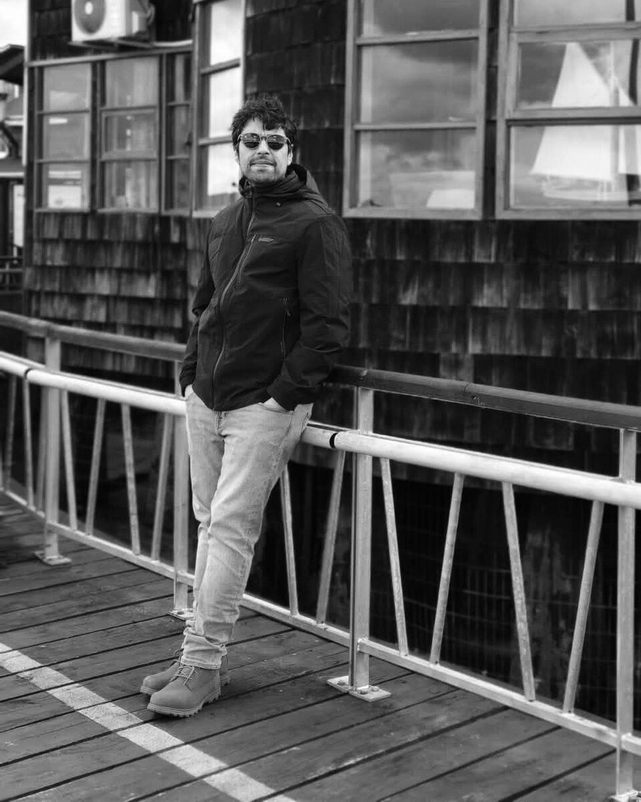

R2F / About
One engineer, from the first model to the last comment.
R2F is Roberto Ruiz, a mechanical engineer who has worked on building energy simulation since 2010. He scopes every project, builds every model, checks the results and answers the assessor himself.

The path to R2F
- 2022 – today
- Founder and principal consultant, R2F. BREEAM and LEED energy and comfort modelling for consultancies, assessors and engineering offices in Europe.
- 2018 – 2021
- Expert in building energy efficiency, Sweco Belgium. Energy performance work and BREEAM modelling inside a large engineering firm.
- 2010 – 2016
- Research engineer, University of Liège. Building energy research and five European research projects.
- 2008 – 2009
- Project engineer, EnerSolutions, Chile. First professional work in energy.
Why a remote specialist
Most teams need detailed energy and comfort modelling a few times a year, not every week. Hiring for it rarely makes sense. Handing it to a large firm often means the person who sold the job is not the person who builds the model.
- You keep the project
- The client relationship, the certification lead and the design decisions stay with your team. We take a defined modelling scope.
- No hand-offs
- The same engineer reads your drawings, builds the model, writes the report and answers the comments months later.
- Your language, your template
- English, French or Spanish, under the R2F name or under yours.
Tools and open work
EnergyPlus and OpenStudio for every model, with TRNSYS experience from earlier projects. Python for setup, extraction and checks. Some of that tooling is public.
- OpenStudio MCP ServerLets AI assistants such as Claude load, inspect and edit OpenStudio models.
- OpenStudio ToolkitA Python library to extract, analyse and modify OpenStudio models.
- OpenStudio Python Methods ExplorerA small app that lists the OpenStudio SDK methods available for each object in a model.